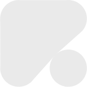

OPCODATraço fino, pontas redondas, um peso só. Substituem os glifos atuais de paintGlyph.
O knob perdeu corpo, marcas e halo: arco de 1,5 px, valor de 2 px e um ponto. O detent dial é o mesmo arco com as posições visíveis — só em parâmetros de até cinco opções.